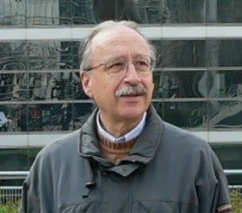

Anunțăm, în premieră absolută în presa de limbă română de dincoace și de dincolo de Prut, apariția primului dicționar istroromân-italian, semnat de profesorul Antonio Dianich, el însuși istroromân. Intitulat "Vocabolario istroromeno-italiano. La varietà istroromena di Briani," dicționarul a văzut lumina tiparului, în ianuarie 2011, la editura italiană "Edizioni ETS" prin generoasa contribuție a Departamentului de Lingvistică "Tristano Bolelli" al Universității din Pisa.
Cunoșteam, încă din toamna anului 2008, din corespondența cu profesorul Antonio Dianich, că dumnealui lucrează, de ani de zile, asupra acestui dicționar al limbii vorbite altădată în localitatea istriotă Bărșcina. Prilejul cu care ne-am cunoscut la distanță ne-a fost oferit de o inițiativă pe care am lansat-o, la 17 aprilie 2008, în calitate de membru al Subcomisiei APCE pentru Minorități, împreună cu alți 33 de deputați din 20 de state membre ale Consiliului Europei. Era vorba atunci de proiectul de Rezoluție privind situația culturală dificilă a minorității istro-române deosebit de amenințate, proiect înregistrat oficial la 21 aprilie și difuzat, în limbile engleză și franceză (La situation culturelle difficile de la minorité istro-roumaine particulièrement menacée/Difficult cultural situation of the Istro-Romanian minority particularly threatened), ca document al Consiliului Europei cu numărul Doc. 11595.
Prin amabilitatea autorului, valoroasa apariție bibliografică și lexicografică ne-a sosit zilele acestea la Chișinău, fapt pentru care nu numai că îi suntem deosebit de recunoscători, dar ne și vedem obligați să o prezentăm deîndată, fie și scurt, publicului nostru cititor.
Vom începe prin a arăta că dicționarul domnului Dianich are o dedicație. Merită să o reproducem, întrucât aceasta, spre deosebire de toate comentariile și explicațiile făcute în italiană, este formulată în dialect istroromân: Cesta libru fuost-a piseit za uspomena de mea måie Mița lu Petărhuli, de me ceåce Buojo lu Șceavina, și de tuoț briiåni cårli scu restriț pre tuota luma, adică Această carte a fost scrisă în amintirea mamei mele Mița a lui Petărhuli, a tatălui meu Buojo lui Șceavina, și a tuturor brienenilor care sunt risipiți în toată lumea.
Dicționarul cuprinde doar material lexical colectat de-a lungul anilor, printr-un efort susținut și exemplar, de la vorbitorii dialectului istroromân care au mai supraviețuit în comuna în care autorul a copilărit sau, mai ales, de la consătenii săi plecați în diasporă, în special la New York, unde există o comunitate de câteva sute de istroromâni, fapt reflectat în chiar titlul lucrării: Vocabolario istroromeno-italiano. La varietà istroromena di Briani (Vlåșchi ce s-a ganeit în Bărșcina, adică Româna ce s-a vorbit în Bărșcina).
În cele 233 (XXXIV plus 199) de pagini ale sale, lucrarea inserează, pe lângă Vocabularul propriu-zis și o Culegere de texte în dialect istroromân: o Prefață a profesorului Roberto Ajello; Considerații generale; o amplă Introducere care include la rândul său o prezentare istorico-geografică și cultural-spirituală a istroromânilor, a dialectului vorbit de ei, o listă de informatori, tabele cu un număr de 7 verbe conjugate (a vrea (vrea), a avea (vea), a fi (fi), a usca (uscå), a ști (ști), a mânca (muncå), a merge (meare)); un Tabel sinoptic al toponimelor istroromâne cu echivalentele lor italiene și croate; o Listă a numelor de familii (case) și a agrotoponimelor care figurează în lucrare. Textele istroromâne și traducerile lor în italiană sunt grupate astfel: Istorie, Viața la țară, Descântece și vrăji, Ritmuri și cântări, Proverbe și zicători, Anecdote.
Pentru redarea cuvintelor și textelor în dialectul istroromân, autorul folosește un sistem grafic propriu, inspirat din scrierea italiană și croată, dar și din alfabetul IPA (International Phonetic Association), ceea ce, la prima vedere, face textul istroromân poate mai greu de recunoscut de către persoanele obișnuite cu scrierea românească.
O informație de utilitate. Pentru cei interesați să intre în posesia valoroasei lucrări, vom preciza că dicționarul poate fi livrat prin poștă, la prețul de 20 €. Editura primește comenzile în acest sens pe adresa electronică info@edizioniets.com sau la numerele de telefon (+39) 050-29544-503868 și de fax (+39) 050-20158.
Să revenim însă la prezentarea propriu-zisă a acestui instrument lexicografic unic în felul său. Dicționarul se dorește a fi o arhivă sau un depozitar al limbii așa cum se vorbea ea înainte de ocupația croată și înaintea plecării în diasporă, cu certitudine nu în iluzia că limba ar putea supraviețui la fața locului, ci în speranța că va putea rămâne o mărturie a existenței ei," spune profesorul Dianich în Introducerea sa. Autorul mai arată, de asemenea: "Acest dicționar se vrea a fi însă, mai presus de orice, un omagiu adus populației istroromâne, curajului și tenacității cu care și-a conservat limba de-a lungul secolelor până la limita oricărei posibilități omenești și care astăzi, risipită în lume, asistă neputincioasă la agonia ei.
Dicționarul istroromân-italian elaborat de profesorul Dianich și publicat acum la Pisa are, fără exagerare, o importanță inestimabilă pentru lexicografia și dialectologia română. Această monumentală lucrare științifică și instrument practic este rodul efortului unui singur om, efort pe care ar fi trebuit să-l depună instituții științifice întregi.
Câteva cuvinte despre autor
 Se prezintă modest, cu multă zgârcenie și nostalgie, în același timp, el însuși, pe supracoperta lucrării: Sunt un istroromân născut la Fiume în 1933. În 1949 a trebuit să-mi părăsesc țara. Sunt licențiat în Limbi Clasice al Universității din Pisa și al școlii Normale Superioare din aceeași localitate. Am predat întotdeauna limbile italiană și latină în licee din Italia, dar și la cele din Madrid sau din Istanbul. Actualmente sunt pensionar: locuiesc la Pisa, dar am scris această carte la umbra măslinilor din Casa di Cimitagna, la poalele altui Munte Mare (Monte Maggiore), unde crește și rodește cele mai bune prune un pom pe care l-au adus cu ei din Istria părinții mei pe când era doar un puiete cu două frunze palide. Vom adăugă faptul că profesorul istroromân Antonio Dianich este fratele unui mare teolog și prelat romano-catolic, Severino Dianich, vicar al Arhiepiscopiei de Pisa.
Profesorul Dianich mai scrie, cu evidentă bucurie și durere în suflet: Istroromânii, un grup lingvistic minuscul din Istria, în a cărui istorie nu este cert aproape nimic cu excepția dureroaselor întâmplări din ultimul război, care a determinat o dramatică plecare a lor în diasporă, au locuit pe dealurile din jurul lacului Felicia, iar acum, după întremarea lor din anii 1930, locuiesc într-o vale însorită de la poalele Muntelui Maggiore: o mică, săracă, dar fericită Arcadia, l'hortus conclusus-ul vieții lor, al cântecului și al graiului lor deosebit.
Acum însă vechile case de piatră, adesea având acoperișuri de stuf, sunt ocupate de persoane venite de pe aiurea: doar câțiva bătrânei care au rămas, căci nu i-a lăsat inima să plece, încă mai vorbesc bătrânul grai. Printr-o minune a istoriei, supraviețuiește la New York o mică colonie, sortită și ea să se stingă. Singurul lucru pe care l-am putut face a fost să recuperez din propriile-mi amintiri și din cele ale unor țărani forțați să devină cetățeni ai unei mari metropole, relictele unui naufragiu fatal. Cartea de față se dorește a fi o arhivă a ceea ce încă supraviețuiește din cultura ultimilor istroromâni și, în mod deosebit, din limba lor (și a mea) aflată pe moarte.
Mai este însă și o "frumoasă călătorie de suflet" în autobiografia mea, o elegie pentru sfârșitul unei lumi, al lumii noastre istroromâne.
Aceste cuvinte, scrise cu atâta suflet, concentrează în ele drama comunității istroromâne și ne scutesc de datoria de a mai adăuga ceva.
Și totuși… Merită totuși să lansăm cu această ocazie, a apariției primului dicționar istroromân-italian, alcătuit de un istroromân, o frumoasă provocare… Multă lume s-ar gândi, poate, la așa ceva. Dacă aș fi din București și ar depinde de mine, aș căuta, fără ezitare, să răsplătesc, în numele tuturor românilor, efortul distinsului profesor Antonio Dianich, cel mai mare intelectual istroromân în viață. Cultural vorbind, Domnia sa a făcut pentru istroromâni ceea ce un alt distins profesor, Petar Atanasov de la Skopie (Macedonia), a făcut (și face) pentru megleno-români. Dacă profesorul Andrei Glavina a fost, la începutul secolului XX, primul apostol al isroromânilor, profesorul Antonio Dianich este acum, la venerabila vârstă de 77 de ani, ultimul lor patriarh și apostol.
O lansare de carte în București și în alte centre culturale ale țării, cu participarea autorului, și o reeditare a dicționarului în România, cu alfabet românesc ar fi de luat în seamă.
Probabil că nici Academia Română și nici Președintele României nu ar greși deloc dacă și-ar opri atenția și generozitatea asupra acestui om care are meritul real de a fi contribuit exemplar la cunoașterea și, poate, supraviețuirea comunității istroromâne aflate în agonie sub ochii neputincioși (și nepăsători?) ai Statului (național) Român.
Nota noastră
Dialectul istroromân este unul dintre cele 4 dialecte istorice ale limbii române (alături de dialectele megleno-român, aromân și daco-român).
Organizația internațională UNESCO a inclus dialectul istroromân în Cartea Roșie a limbilor în pericol (UNESCO Red book on endangered languages), amintind că este grav periclitat, întrucât nu există administrație, învățământ, presă sau biserici în acest dialect istoric al limbii române.
Zona locuită de istroromâni este cunoscută până astăzi și ca regiunea Ciceria, fapt pentru care acești confrați ai noștri mai sunt numiți și Cici. Unii le mai spun onomatopeic Ciribiri (după cuvintele pronunțate dialectal "cire"/cine și "bire"/bine). Ei își spun astăzi Vlåhi,iar din vechime și până nu demult și-au spus Rumâri sau Rumeri. Cele mai recente ediții ale marilor enciclopedii ale lumii, precum și UNESCO ne prezintă cifre care variază între 500 și 1500 de vorbitori concentrați în special în opt localități din partea croată a peninsulei Istria și în două localități din partea slovenă a peninsulei. Potrivit altor surse, numărul vorbitorilor de istroromână ar fi și mai mic. Oricum, acesta este în declin continuu. În Croația istroromânii locuiesc în satul Žejane/Jeiăni (cea mai mare dintre toate localitățile istroromâne, situată la nord de Muntele Mare sau Maggiore/Učka) din plasa Mune, județul (županija) Primorsko-goranski, precum și de satul Šušnjevica/Șușnevița sau Val d'Arsa și cătunele Brdo/Bârda, Jesenovik/Sucodru, Nova Vas/Nosela, Kostračani/Costerceani, Letaj/Letai și Zankovci din plasa Kršan/Crișan, județul (županija) Istria, iar în Slovenia este vorba de localitățile Golac și Polijane.
Andrei Glavina, supranumit "Apostolul istroromânilor," a înființat și a condus între 1921 și 1925 la Šušnjevica/Șușnevița școala "Împăratul Traian" cu predare în dialectul istro-român și în româna literară, tot el fiind și autor al primei cărți de rugăciune în dialectul istroromân. Istroromânii sunt romano-catolici. Printre marile personalități date de istroromâni se numără: Matei Vlăhici (1520-1575), teolog protestant de limbă latină și germană din secolul XVI, primul și cel mai de încredere colaborator al lui Martin Luther; Nicolae Teslea (1856-1943), devenit cunoscut ca Nicola Tesla (în croată și în alte limbi), recunoscut unanim pe plan mondial ca cel mai mare inventator al secolului XX și supranumit "extraterestrul român". Nicolae Teslea a înregistrat peste 1200 de invenții de o tehnicitate ce surclasa contemporaneitatea și care sunt aplicate abia acum, în secolul XXI. În SUA foarte multă lume spune că numele corect al secolului XXI este Nicolae Teslea.
Printr-o Decizie a Ministerului croat al Culturii din 27 august 2007 graiurile istroromâne (Istro-rumunjski govori (vlaški i žejanski)) au fost declarate drept bun cultural nematerial și incluse în Lista bunurilor culturale nemateriale protejate (Lista zaštićenih nematerijalnih kulturnih dobara), care cuprinde orice bun care s-a înrădăcinat ca tradiție și prezintă valoare deosebită sub aspect științific, etnografic, sociologic, antropologic sau lingvistic. În afara acestui act declarativ, nici o altă măsură practică nu a fost întreprinsă în vederea salvării graiurilor istroromâne.
Elegi för istrorumäner vid uppkomsten av det första istrorumänska-italienska lexikonet
För första gången har det kommit ut ett istrorumänskt-italienskt lexikon, författat av professor Antonio Dianich, själv istrorumän. Med titeln Vocabolario istroromeno-italiano. La varietà istroromena di Briani kom det från tryckeriet i januari 2011 på det italienska bokförlaget "Edizioni ETS," genom generöst bidrag från det lingvistiska departamentet "Tristano Bolelli" vid Pisas universitet.
Redan hösten 2008, då jag brevväxlat en tid med professor Antonio Dianich, kände jag till att han sedan många år jobbade på detta lexikon av ett språk som en gång talades i det området på Istrien som heter Bărșcina. Vi blev bekanta tack vare ett initiativ som jag tog den 17 april 2008, som medlem i APCE (Underutskottet för nationella minoriteter) tillsammans med 33 andra parlamentariker från 20 länder i Europeiska Kommissionen. Det handlade då om projektet Difficult cultural situation of the Istro-Romanian minority particularly threatened, projekt som blev registrerat den 21 april och tillkännagiven som Europakommissionens dokument med nr: Doc. 11595.
Genom författarens vänlighet, landade den värdefulla bibliografiska och lexikografiska publikationen hos oss i Chișnău (Moldavien). Vi är inte bara tacksamma för detta vi känner att vi måste presentera den omedelbart för vår läsande publik.
Jag ska börja med att visa att professorns lexikon har en dedikation. Jag måste återge den eftersom denna, till skillnad från alla kommentarerna och förklaringarna gjorda på italienska, är formulerad på istrorumänska: Cesta libru fuost-a piseit za uspomena de mea måie Mița lu Petărhuli, de me ceåce Buojo lu Șceavina, și de tuoţ briiåni cårli scu restriț pre tuota luma, (denna bok skrevs till minne av min mamma Mița, dotter till Petărhuli, av min far Buojo, son till Șceavina och av alla brianerna som är spridda i hela världen).
Lexikonet innehåller lexikalt material samlat under många år genom en långvarig process från istrorumänsktalande personer. De är människor som har överlevt historiens gång i den by där författaren tillbringade sin barndom. Det är också mycket material från de bybor som har varit tvungna att utvandra, många till New York där det finns en diaspora på några hundra istrorumäner. Det faktum avspeglar sig redan i verkets titel La varietà istroromena di Briani (Vlåșchi ce s-a ganeit în Bărșcina), dvs. Rumänskan som talades i Bărșcina.
På sina 233 sidor innehåller arbetet förutom det egentliga uppslagsverket även en textsamling i den istrorumänska dialekten, ett förord skrivet av professor Roberto Ajello, allmänna överväganden, en omfattande introduktion som, i sin tur, inkluderar en historisk-geografisk och kulturell-spirituell presentation av istrorumänerna och dialekten de talar, en förteckning över uppgiftslämnare, tabeller med 7 böjda verb (att vilja, att ha, att vara, att torka, att veta, att äta, att gå), en tabell av ortnamn med sina motsvarigheter på istro-rumänska, italienska och kroatiska samt en lista med namn och gårdar. De istrorumänska texterna och deras översättningar på italienska är grupperade som följer: Historia, Livet på landet, Besvärjelser och trolldom, Rytmer och sånger, Ordspråk och talesätt, Anekdoter.
För återgivandet av ord och text på den istrorumänska dialekten använder författaren ett eget grafiskt system inspirerat av den italienska och den kroatiska stavningen men även från alfabetet IPA (International Phonetic Association), vilket kanske till en början gör den istrorumänska texten lite svårare att känna igen av personer som är vana vid den rumänska stavningen.
En användbar upplysning, för de som är intresserade att få tag på detta värdefulla verk kan lexikonet beställas och skickas då med post till priset av 20 €. Förlaget tar emot beställningar på e-post: info@edizioniets.com eller tel. (+39) 050-29544-503868 och fax (+39) 050-20158.
Låt oss dock återvända till den egentliga presentationen av detta lexikografiska instrument, enastående på sitt sätt. "Ordboken är tänkt att vara ett arkiv eller en bevarare för språket så som det talades före den kroatiska ockupationen och före den påtvingade emigreringen, inte i illusionen att språket skulle kunna överleva men i hoppet att det ska kunna vara en vittnesbörd för dennas existens," säger professor Dianich i sin introduktion. Han säger också "detta lexikon vill sig vara, framförallt, en hyllning till det istrorumänska folket, till dess mod och styrka med vilka de har konserverat sitt språk under århundradena ända intill gränsen för all mänsklig möjlighet och som idag, spritt överallt i världen, uthärdar sin vånda".
Det istrorumänska-italienska lexikonet, utarbetat av professor Dianich och nu utgivet i Pisa, är utan att överdriva ovärderligt viktigt för den rumänska lexikografin och dialektologin. Detta gigantiska vetenskapliga arbete och praktiska instrument är frukten av en enda mans arbete, en ansträngning som skulle ha gjorts av hela vetenskapliga institutioner.
Några ord om författaren
Han presenterar sig modest, med anspråkslöshet och nostalgi på samma gång, på omslaget: "Jag är en istrorumän född i Fiume 1933. År 1949 var jag tvungen att lämna mitt land. Jag har filologiexamen i klassiska språk på Pisa Universitet och på "Scuola Normale Superiore" på samma ort. Jag har alltid undervisat i latin och italienska på olika gymnasier i Italien men även i Madrid och Istanbul. Numer är jag pensionär. Jag lever i Pisa, men har skrivit denna bok under olivträdens skugga vid Casa di Cimitagna, vid foten av ett annat stort berg (Monte Maggiore), där det växer och ger de godaste plommonen, ett plommonträd som mina föräldrar hade med sig från Istrien, då det var tunn och ung med ett par vissna blad".
Vi tilläger att den istrorumänske professorn Antonio Dianich är bror till en stor teolog och prelat, romersk-katolsk, Severino Dianich, biskop av Ärkestiftet i Pisa. Professorn Dianich skriver också med uppenbar glädje och sorg i själen: "Istrorumänerna, en mycket liten lingvistisk grupp från Istrien, i vars historia nästan ingenting är säkert, med undantag från de smärtsamma händelserna från det senaste kriget, som har orsakat en dramatisk utflyttning till diaspora, har bott på backarna runt Feliciasjön och nu, efter deras återhämtning från 30-talet, bor de i en solig dal vid foten av Monte Maggiore; en liten, fattig men lycklig Arcadia, l'hortus conclusus i deras liv och i deras sång och tal som är så annorlunda.
Idag, är de gamla stenhusen, ofta med vasstak, ockuperade av personer som kommer från olika håll, bara några gamlingar är kvar – de som inte hade hjärtat att gå – och pratar fortfarande den gamla dialekten. Genom ett historiskt under överlever i New York en liten koloni, även den dömd att slockna. Det enda jag kunde göra var att hämta reliker av ett totalt skeppsbrott från mina och några bönders, tvungna att bli medborgare i en stor metropol, gamla minnen. Denna bok är tänkt att vara ett arkiv av det som fortfarande överlever från de sista istrorumänernas kultur och i synnerhet av deras (och mitt) språk som ligger på dödsbädden. Men det är även en "vacker själsresa" i min självbiografi, en elegi för världens slut, vår istrorumänska värld".
Dessa ord, skrivna från djupet av hjärtat, koncentrerar i sig själva det istrorumänska folkets hela drama och det befriar oss från skyldigheten av att tillägga något.
Fakta
Den istrorumänska dialekten är en av de 4 historiska dialekterna av det rumänska språket (de andra är meglenorumänska, arumänska och dacorumänska). UNESCO har satt den istrorumänska dialekten i Red Book (utrotningshotade språk) där det påpekas att språket är allvarligt hotat, eftersom det inte finns administration, utbildning, medier eller kyrkor på den historiska dialekten av rumänska språket.
Vlad Cubreacov
Translated by Sofia Marinca
March 18, 2012
© 2012 Flux